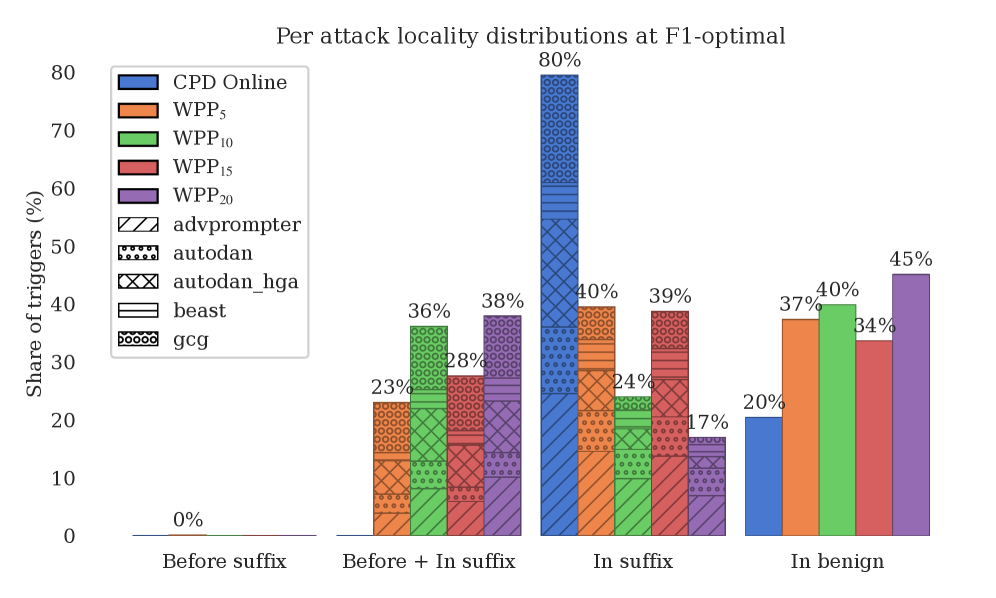
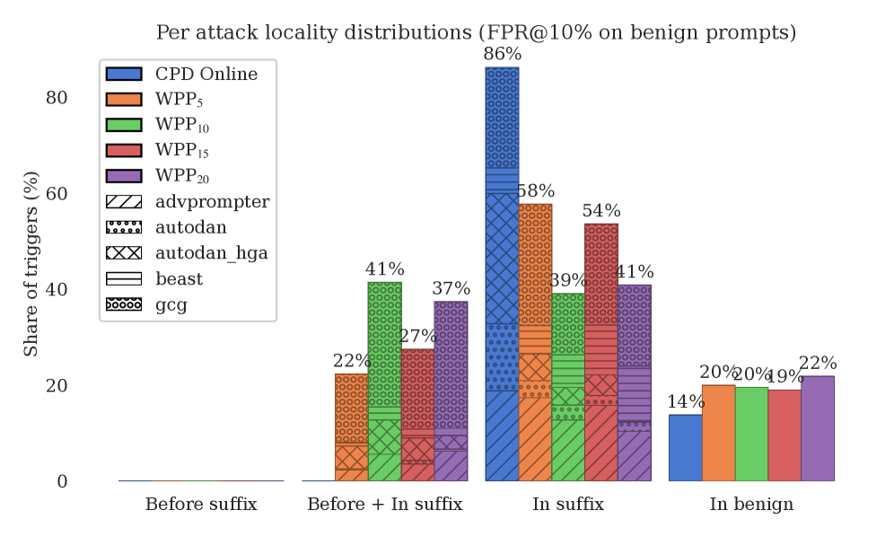

CPD Online detects fluent optimization-based adversarial suffixes by monitoring sequential entropy changes, achieving superior F1 and localization without training.
本文提出了一种无需训练的在线变点检测方法CPD Online，通过监控令牌级熵流来检测优化型对抗后缀。该方法在六个LLM上均优于窗口困惑度基线，F1最高达0.82，并能定位79.6%的触发点位于对抗后缀内。
Deep Note — cpd-online
Key Takeaways - Adversarial suffix detection is cast as an online change-point detection problem on token-level entropy streams. - CPD uses a robust baseline from the system prompt (median + MAD) and a one-sided CUSUM statistic, requiring no training. - CPD outperforms windowed perplexity (WPP) on F1 across all six tested LLMs, achieving AUROC 0.88 and F1 0.82 on LLaMA-2-7B. - CPD localizes 79.6% of triggers inside the adversarial suffix, vs. 17-46% for WPP, enabling token-level attack localization. - As a gate for LLaMA Guard, CPD reduces guard calls by 17-22% on benign-dominated traffic while preserving detection quality.
0) Metadata
- Title: Detecting Fluent Optimization-Based Adversarial Prompts via Sequential Entropy Changes
- Alias: cpd-online
- Authors: Mohammed Alshaalan, Miguel R. D. Rodrigues
- arXiv ID: 2605.19966
- Published:
- Links:
- Abs: https://arxiv.org/abs/2605.19966
- HTML: https://arxiv.org/html/2605.19966v1
- PDF: https://arxiv.org/pdf/2605.19966
- Tags: adversarial-suffix-detection, change-point-detection, llm-safety, entropy-analysis, online-detection
- Domains: ai_safety, system_safety
- Rating: 4/5 (base 1 + quality 2 + observation 1)
1) Why-read
CPD Online detects fluent optimization-based adversarial suffixes by monitoring sequential entropy changes, achieving superior F1 and localization without training.
2) CRGP
C — Context
Optimization-based adversarial suffixes (e.g., GCG, AutoDAN) can jailbreak aligned LLMs while remaining fluent, evading static and windowed perplexity detectors. Existing defenses either use statistical perplexity-based scores or auxiliary safety classifiers (e.g., LLaMA Guard), but both have limitations: perplexity methods fail on fluent attacks, and guard models add latency and can be attacked themselves.
R — Related work
- Perplexity-based detectors (PP, WPP) assume adversarial suffixes are disfluent, but fail on fluency-optimized attacks (Jain et al., 2023; Alon & Kamfonas, 2023).
- Safety classifiers like LLaMA Guard (Inan et al., 2023) achieve strong benchmark scores but introduce latency and can be targeted by optimization-based attacks.
- Optimization-based suffix attacks: GCG (Zou et al., 2023), AutoDAN (Zhu et al., 2024), AdvPrompter (Paulus et al., 2025), BEAST (Sadasivan et al., 2024), AutoDAN-HGA (Liu et al., 2024).
- Change-point detection (Page CUSUM) is applied to token-level entropy streams for the first time in this context.
G — Gap
Existing statistical detectors (PP, WPP) assume adversarial suffixes are statistically unlikely and disfluent, but optimization-based attacks can produce fluent suffixes with perplexity within benign range. Safety classifiers like LLaMA Guard are expensive and can be attacked. No prior work applies online change-point detection within a single request at the token level to detect and localize adversarial suffixes.
P — Proposal
CPD Online formulates adversarial suffix detection as an online change-point detection problem on the token-level next-token entropy stream. It uses the LLM system prompt to estimate a robust baseline (median and MAD), standardizes user-token entropies, and applies a one-sided Page CUSUM statistic to detect sustained upward shifts. The method is model-agnostic, training-free, and runs online, providing both prompt-level decisions and token-level localization of the suffix onset.
---
4) Experiments
Main results
On a benchmark of 1,012 optimization-based suffix attacks (GCG, AutoDAN, AdvPrompter, BEAST, AutoDAN-HGA) and 1,012 perplexity-controlled benign prompts, CPD improves F1 over the strongest windowed-perplexity baseline on all six open-weight chat models (LLaMA-2-7B/13B, Vicuna-7B/13B, Qwen2.5-7B/14B). On LLaMA-2-7B at k=0, CPD achieves AUROC 0.88 and F1 0.82 (vs. PP AUROC 0.46 and best WPP F1 0.74). CPD concentrates 79.6% of its triggers inside the adversarial suffix, versus 17-46% for WPP. As a gate for LLaMA Guard, CPD reduces guard calls by 17-22% on benign-dominated deployment while preserving detection quality.
Ablation
The canonical CUSUM setting (k=0) yields the best trade-off; CPD's performance is robust to the choice of threshold via simple sweeps over F1 and false-positive rates.
Limitations
['CPD relies on a fixed system prompt for baseline estimation; changes in system prompt may require recalibration.', 'The method assumes adversarial suffixes induce a sustained upward shift in entropy; attacks that mimic benign entropy dynamics could potentially evade detection.', 'Evaluation is limited to open-weight chat models; performance on proprietary or instruction-tuned models may vary.']
5) Why it matters
- CPD offers a lightweight, training-free detection method that can be integrated into existing LLM serving pipelines with minimal overhead.
- Token-level localization of adversarial suffixes enables targeted mitigation (e.g., truncation or re-prompting) rather than full prompt rejection.
- The approach is model-agnostic and can be applied to any autoregressive LLM with access to token-level logits.
6) Next steps
- [ ] Evaluate CPD on proprietary models (e.g., GPT-4, Claude) to assess transferability.
- [ ] Explore adaptive attacks that specifically target entropy-based detection to understand robustness boundaries.
- [ ] Integrate CPD as a real-time filter in production LLM serving systems and measure latency/throughput impact.
- [ ] Extend CPD to detect other types of adversarial inputs (e.g., prompt injection, multi-turn attacks).
7) Scoring
4/5 = base 1 + quality 2 + observation 1
通过序列熵变化检测流畅的优化型对抗提示
主要结论 - 将对抗后缀检测转化为令牌级熵流上的在线变点检测问题 - 使用系统提示的稳健基线（中位数+MAD）和单侧CUSUM统计量，无需训练 - 在六个LLM上F1均优于窗口困惑度，LLaMA-2-7B上AUROC达0.88，F1达0.82 - 79.6%的触发点位于对抗后缀内，而窗口困惑度仅为17-46%，实现令牌级定位 - 作为LLaMA Guard的门控，在良性流量占优时减少17-22%的守卫调用，同时保持检测质量
1) 阅读理由
CPD Online通过监控序列熵变化检测流畅的优化型对抗后缀，无需训练即可实现优于窗口困惑度的F1和定位能力。
2) CRGP（背景 / 相关工作 / 差距 / 方案）
上下文：优化型对抗后缀（如GCG、AutoDAN）能绕过静态和窗口困惑度检测器，现有防御要么基于困惑度（对流畅攻击失效），要么依赖辅助安全分类器（增加延迟且易被攻击）。相关工作：困惑度检测器假设对抗后缀不流畅，但流畅攻击可绕过；安全分类器如LLaMA Guard性能好但延迟高；变点检测首次应用于令牌级熵流。差距：现有统计检测器假设对抗后缀统计上不可能且不流畅，但优化攻击可生成流畅后缀；安全分类器成本高且易被攻击；尚无工作将在线变点检测用于单请求令牌级检测和定位。提案：CPD Online将对抗后缀检测建模为令牌级下一令牌熵流上的在线变点检测问题，利用系统提示估计稳健基线，标准化用户令牌熵，应用单侧Page CUSUM统计量检测持续上升偏移，无需训练且模型无关。
3) 实验
在包含1012个优化型对抗后缀攻击（GCG、AutoDAN、AdvPrompter、BEAST、AutoDAN-HGA）和1012个困惑度控制良性提示的基准上，CPD在六个开放权重聊天模型（LLaMA-2-7B/13B、Vicuna-7B/13B、Qwen2.5-7B/14B）上F1均优于最强窗口困惑度基线。在LLaMA-2-7B上k=0时，CPD的AUROC为0.88，F1为0.82（对比PP AUROC 0.46，最佳WPP F1 0.74）。CPD将79.6%的触发点集中在对抗后缀内，而WPP仅为17-46%。作为LLaMA Guard的门控，CPD在良性流量占优的部署中减少17-22%的守卫调用，同时保持检测质量。
消融实验
典型CUSUM设置（k=0）取得最佳权衡；CPD对阈值选择具有鲁棒性，通过简单扫描F1和假阳性率即可确定。
局限性
['CPD依赖固定系统提示进行基线估计；系统提示变化可能需要重新校准。', '该方法假设对抗后缀引起熵的持续上升偏移；模仿良性熵动态的攻击可能规避检测。', '评估仅限于开放权重聊天模型；在专有或指令调优模型上的性能可能不同。']
4) 重要性
- CPD提供轻量级、无需训练的检测方法，可集成到现有LLM服务管道中，开销极小。
- 令牌级对抗后缀定位支持针对性缓解（如截断或重新提示），而非完全拒绝提示。
- 该方法模型无关，可应用于任何可访问令牌级logits的自回归LLM。
5) 下一步
- [ ] 在专有模型（如GPT-4、Claude）上评估CPD，检验可迁移性。
- [ ] 探索专门针对熵检测的自适应攻击，理解鲁棒性边界。
- [ ] 将CPD集成到生产LLM服务系统中作为实时过滤器，测量延迟和吞吐量影响。
- [ ] 扩展CPD以检测其他类型的对抗输入（如提示注入、多轮攻击）。


![Figure 1: Top: benign prompt where the CUSUM statistic W t + W_{t}^{+} (purple) stays below threshold h h (orange) at slack k = 0 k=0 (the canonical Page-CUSUM setting used for Table 1 ; Appendix A ). Bottom: adversarial prompt (AdvPrompter); a sustained upward shift in token entropy after the suffix onset (green) causes W t + W_{t}^{+} to cross h h , triggering an alarm at time τ \tau (red).
The shaded region denotes the ground-truth adversarial suffix.
For comparison the WPP 15 baseline (brown dash-dot, plotted as the non-overlapping window-mean NLL the detector actually scores) and its F1-optimal threshold (brown dotted) are overlaid: on this fluent attack WPP 15 never crosses its threshold while CPD’s W t + W_{t}^{+} does.](figures/1167/fig_001.png)
![Figure 3: A second AdvPrompter example to reinforce Figure 1 .
Token-level entropy (blue) and CUSUM statistic W t + W_{t}^{+} (purple) at the canonical slack k = 0 k=0 used throughout the main paper, with the WPP 15 baseline curve (brown dash-dot) and its F1-optimal threshold (brown dotted) overlaid for comparison. Top: benign prompt, no CPD alarm. Bottom: adversarial prompt (a different AdvPrompter suffix from Figure 1 ); CPD’s W t + W_{t}^{+} crosses h h inside the shaded suffix region, while WPP 15 stays below its threshold throughout.](figures/1167/fig_003.png)
![Figure 4: Aggregate CPD Online CUSUM trajectories by prompt type (LLaMA-2-7B benchmark). Top: k = 0 k=0 . Bottom: k = 0.5 k=0.5 . Curves show the median W t + W_{t}^{+} across prompts with an interquartile band. For adversarial prompts, the green dashed line marks the aligned suffix onset; the orange dashed line marks the threshold h h used for visualization (a representative pooled F1-optimal value; main-paper Table 1 numbers are evaluated with per-fold CV thresholds). The flat segments visible after each attack’s rise (e.g. GCG, AdvPrompter, BEAST) reflect aggregation rather than a saturating detector: prompts of varying length are padded by holding the final W t + W_{t}^{+} value beyond the per-prompt end, so the median plateaus once most prompts at that aligned offset have terminated.](figures/1167/fig_004.png)